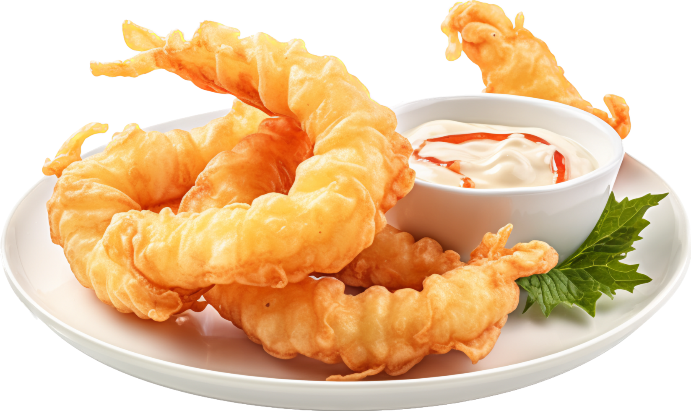
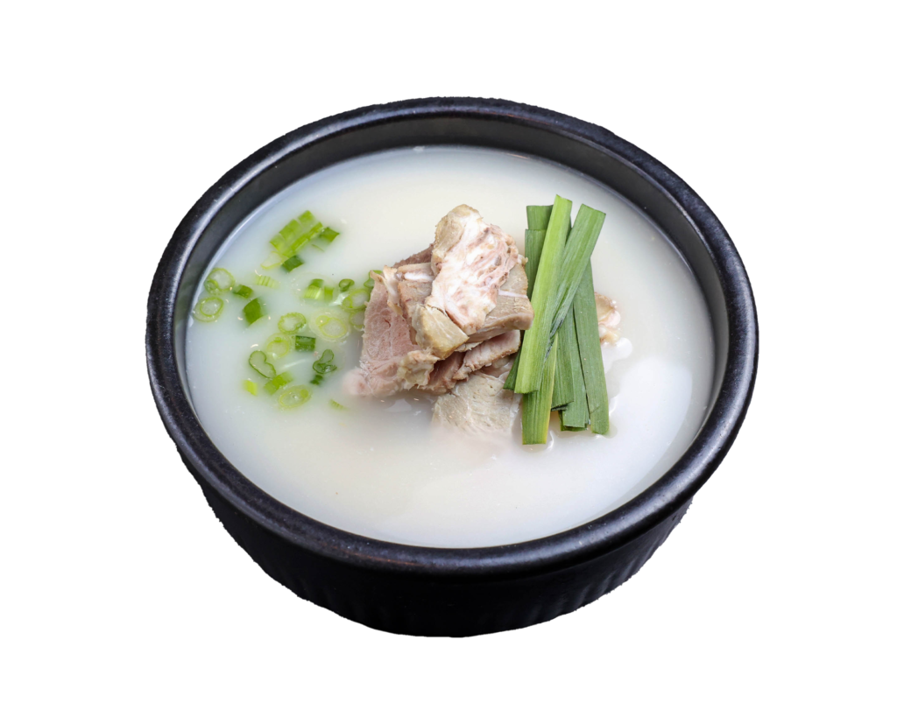
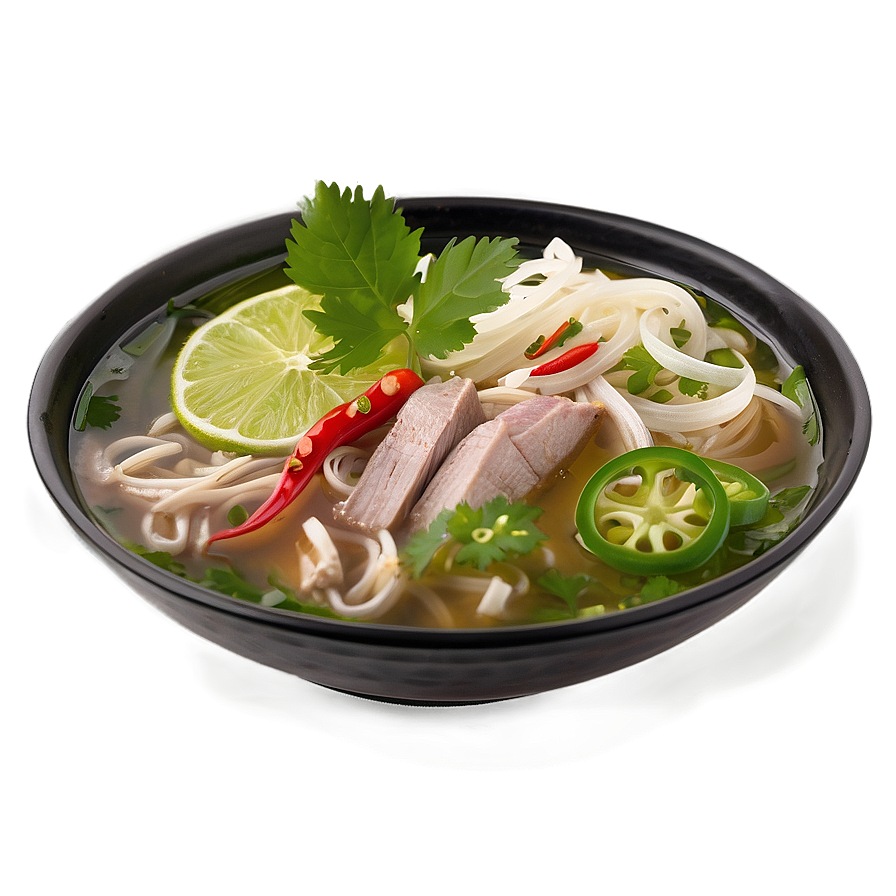
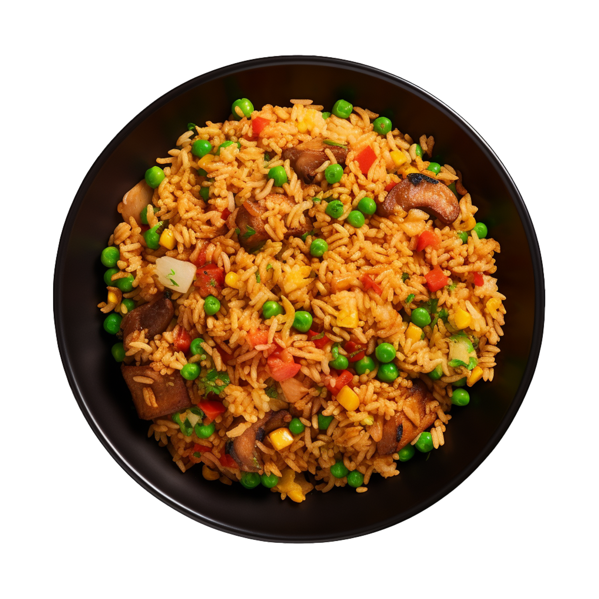
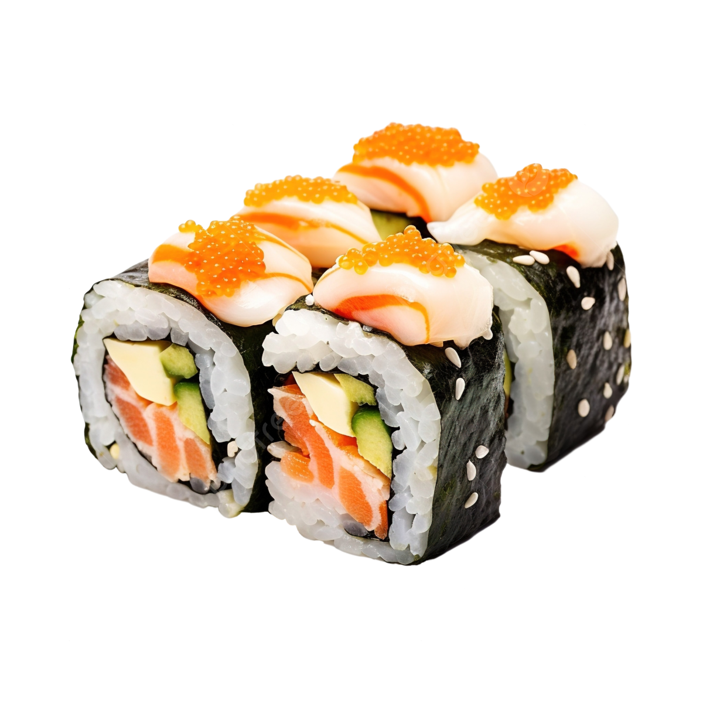

Asian Dishes
Tempura

♥
- 2 cups vegetable oil for frying
- 1 cup all-purpose flour
- 2 tablespoons cornstarch
- 1 pinch salt
- 1 cup water
- 1 large egg yolk
- 2 large egg whites, lightly beaten
- 1 pound medium shrimp, peeled and deveined, tails left on
Beef Bone Soup

♥
- 2 cups sushi rice
- 2 ½ cups water
- ⅓ cup rice vinegar
- 3 tablespoons sugar
- 1 teaspoon salt
- 1 pound sushi-grade fish
- 1 avocado, sliced
- 1 cucumber, julienned
- Nori (seaweed sheets)
Pho

♥
- 8 oz dried rice vermicelli noodles
- Desired meat: chicken, pork, steak or raw shrimp
- 1 large yellow onion, quartered
- 2 (2-inch pieces) fresh ginger, unpeeled and halved, length-wise
- 6 cups broth (chicken, beef or vegetable, depending on protein choice)
- 2 cups water
- ¼ tsp ground coriander
- 1 whole clove (optional)
- 1 ½ Tablespoons fish sauce (or less, to taste preference)
- ¼ teaspoon hoisin sauce
- ¼ teaspoon soy sauce
- ¼ teaspoon red chili paste (sambal oelek)
- 1 stick cinnamon
- salt and freshly ground black pepper
- For garnish:
- 4 green onions, chopped
- 2 fresh jalapeño peppers or red thai chili peppers, thinly sliced and seeds removed
- 1 bunch fresh cilantro, chopped
- 1 bunch Thai basil leaves
- 1 cup fresh bean sprouts
- 2 limes, cut into wedges
- Sriracha hot sauce, or additional red chili paste, for heat, optional
Chicken Fried Rice

♥
- White/Brown rice
- Chicken breasts
- Toasted sesame oil
- Vegetable oil (or canola oil)
- Frozen peas and carrots blend
- Green onions
- Garlic
- Eggs
- Low-sodium soy sauce
Uramaki

♥
- 600g sushi rice (cooked)
- 1 Avocado
- 250g salmon fillets
- 1 sweet potato
- 4 dried seaweed sheets
- 2 tbsp sesame seeds
- 2 tbsp masago (fish roe)
- 2 tbsp wasabi paste
- sushi ginger (for serving)
- soy sauce (for serving)